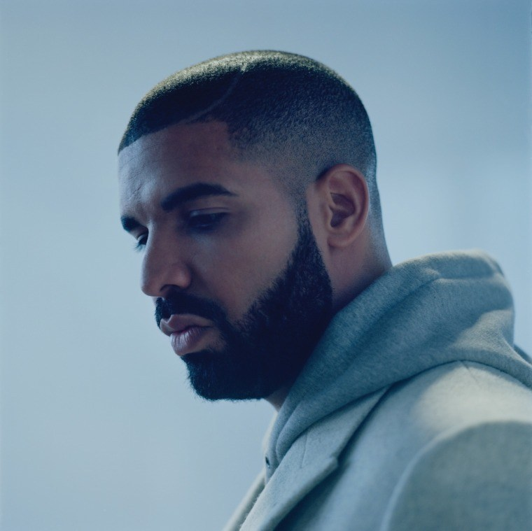

44,896,106 Monthly Listeners

Drake
About Artist
Canadian rapper and vocalist Drake sustained a high-level commercial presence shortly after he hit the scene in 2006, whether with his own chart-topping releases or a long string of guest appearances on hits by the likes of Lil Wayne, Rihanna, and A$AP Rocky. Thanks to his introspective rap style, his sensitive R&B crooning, and his gold-touch songwriting, each one of his albums, from 2011's Take Care to 2018's Scorpion, topped charts worldwide, and his singles, like the Grammy-winning "Hotline Bling," and many mixtapes did as well. As his star rose, he helped others along, sponsoring the Weeknd's early work, starting the OVO Sound label, and giving features on his records to up-and-coming acts. By the second decade of his career, Drake's constant chart domination, his Grammy wins and nominations, and his meme-worthy cultural presence made him one one of the world's most popular musicians.
Known initially for his role as Jimmy Brooks on Degrassi: The Next Generation, the Toronto, Ontario-born Aubrey Drake Graham stepped out as a rapper and singer with pop appeal in 2006, when he initiated a series of mixtapes. A year later, despite being unsigned, he scored major exposure when his cocky and laid-back track "Replacement Girl," featuring Trey Songz, was featured on BET's 106 & Park program as its "Joint of the Day." He raised his profile throughout the next several months by popping up on countless mixtapes and remixes, and as rumors swirled about contract offers from labels, he gradually became one of the most talked-about artists in the industry. It did not hurt that he had support from the likes of Kanye West, Jay-Z, and Lil Wayne.
By the end of June 2009, "Best I Ever Had," a promotional single, had climbed to number two on Billboard's Hot R&B/Hip-Hop Songs chart. After a fierce bidding war, Drake signed with Universal Motown in late summer and released an EP (So Far Gone) made up of songs from his popular So Far Gone mixtape. It peaked at number six on the U.S. Billboard 200 chart and won a 2010 Juno Award for Rap Recording of the Year. Thank Me Later, a full-length featuring collaborations with the Kings of Leon, the-Dream, Jay-Z, Kanye West, and Lil Wayne, was issued through Young Money in June 2010. It debuted at number one on the U.S. Billboard 200 chart and was certified platinum by the Recording Industry Association of America. Still, the artist felt his debut was rushed, so its follow-up arrived in November 2015 with the title Take Care, referencing the increased time and effort put into the album's creation. Receiving critical acclaim, Grammy Awards, and the number one slot on the U.S. Billboard 200, Take Care cemented Drake's place as one of Canada's biggest exports.
In 2012, while on tour, Drake announced that he had started work on what would be his third studio album. Nothing Was the Same was released the following September. It spawned many singles, topped charts around the world, was shortlisted for the Polaris Music Prize, and was nominated for a Best Rap Album Grammy. Soon after the album's release, he hit the road on an extended tour, took part in some collaborations, and released a few singles, including the Grammy-nominated "0 to 100/The Catch Up." His next release was planned as a free mixtape before Cash Money decided they would rather charge for it. The decidedly downbeat If You're Reading This It's Too Late was released in February 2015 and debuted at number one, while all 17 of its songs entered the Hot R&B/Hip-Hop Songs chart.
In late summer 2015, he dropped a trio of new tracks on his SoundCloud page. One of them, the Timmy Thomas-sampling "Hotline Bling," became a Top Five pop hit in Canada and the U.S. and something of a cultural phenomenon. Later that year, Drake hit the studio with Future for a six-day session that yielded the mixtape What a Time to Be Alive. Upon the album's September release, it became Drake's second recording of the year to debut at number one. After dropping three singles in the beginning months of 2016, Drake's fourth album, Views, was released in April and debuted at number one. It revolved lyrically around his hometown of Toronto and featured production by longtime cohorts Noah "40" Shebib and Boi-1da, among others. Late that year, Drake issued another trio of singles, including the chart-topping "Fake Love." They preceded the playlist More Life, released the following March with appearances from Kanye West, Quavo, Travis Scott, and Young Thug. The release became his seventh consecutive chart-topping album. At the start of 2018, Drake issued the two-song EP Scary Hours. Both "Diplomatic Immunity" and "God's Plan" hit the Top Ten, the latter becoming his second solo chart-topper. It served as a precursor to his fifth album, the two-disc set Scorpion, which was broken into a rap side and an R&B side that featured the hit single "Nice for What." It was released in June and instantly went platinum, while also breaking records for most streams in a single day. ~ Andy Kellman, Rovi